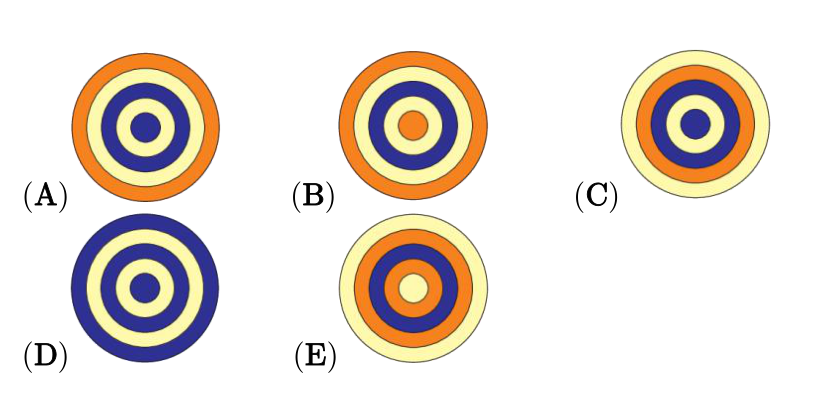

下面哪张图里用到了其他图中没有的形状？
In which picture is a shape used that cannot be seen in the others?

先选一种形状（正方形、三角形、平行四边形、梯形），再点 A–E 图片，看哪些图里有这种形状。找出「独有」的那张。
Pick a shape type, tap pictures A–E to mark which contain it. Find the picture with a unique shape.
我的答案
My answer